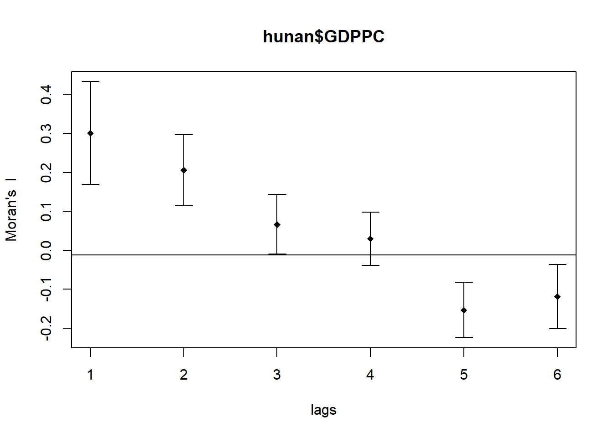

pacman::p_load(sf, spdep, tmap, tidyverse)Hands-on Exercise 5a
Getting Started
In this hands-on exercise, we’ll learn how to compute Global Measures of Spatial Autocorrelation (GMSA) using spdep library to plot scatterplot and compute and plot spatial correlogram. In this hands-on, we’ll be looking at distribution of development geographically, if they are equally distributed. If they’re not equally distributed geographically, then we’ll can look into signs of spatial clustering and where they are located.
Import Libraries
The libraries used in this exercise would be:
sf: simple features in R to encode and analyze spatial vector data
spded: used to create spatial weights matrix objects
tmap: used to draw thematic map
tidyverse: collection of R packages that for data manipulation and visualization
The Data
In this hands-on exercise, we’ll be analyzing the GDP per capita of Hunan, China. So we’ll be using the Hunan province administrative boundary layer at county level (ESRI shapefile). We’ll also be using the Hunan_2012 which is a csv file containing selected Hunan’s local development indicators in 2012.
Import Data
A st_read() will be used to import Hunan shapefile into sf object.
hunan <- st_read(dsn = "data/geospatial",
layer = "Hunan")Reading layer `Hunan' from data source
`C:\stefanie-fel\ISSS626-GAA\Hands-on_Ex\Hands-on_Ex05\data\geospatial'
using driver `ESRI Shapefile'
Simple feature collection with 88 features and 7 fields
Geometry type: POLYGON
Dimension: XY
Bounding box: xmin: 108.7831 ymin: 24.6342 xmax: 114.2544 ymax: 30.12812
Geodetic CRS: WGS 84The Hunan_2012 dataset will be imported using read_csv().
hunan2012 <- read_csv("data/aspatial/Hunan_2012.csv")Next, we;ll be joining both dataset using left_join()
hunan <- left_join(hunan,hunan2012) %>%
select(1:4, 7, 15)Visualize Regional Development Indicator
First, we’ll visualize a basemap and choropleth map showing the distribution of GDPPC 2012 using qtm().
equal <- tm_shape(hunan) +
tm_polygons(fill = "GDPPC",
fill.scale = tm_scale_intervals(
style = "equal",
n = 5,
values = "brewer.blues")) +
tm_borders(fiil_alpha = 0.5) +
tm_layout(legend.position = c("left", "bottom"),
main.title = "Equal interval classification")
quantile <- tm_shape(hunan) +
tm_polygons(fill = "GDPPC",
fill.scale = tm_scale_intervals(
style = "quantile",
n = 5)) +
tm_borders(fiil_alpha = 0.5) +
tm_layout(legend.position = c("left", "bottom"),
main.title = "Quantile classification")
tmap_arrange(equal,
quantile,
asp=1,
ncol=2)
Global Measures of Spatial Autocorrelation
In this section, we’ll learn the steps on how to compute global spatial autocorrelation statistics and perform spatial complete randomness test.
1. Compute Contiguity Spatial Weights
Before computing the global spatial autocorrelation statistics, we need to construct spatial weights of the study area to define neighbourhood relationships between geographical units (i.e. county).
In this example, we’ll use poly2nb() to compute contiguity weight matrices of the study area. The function builds a neighbours list based on regions with contiguous boundaries. Note that the poly2nb() function takes on the “queen” argument, by default it is set to TRUE. So a neighbours list will be returned using the Queen criteria if queen = TRUE .
wm_q <- poly2nb(hunan,
queen=TRUE)
summary(wm_q)Neighbour list object:
Number of regions: 88
Number of nonzero links: 448
Percentage nonzero weights: 5.785124
Average number of links: 5.090909
Link number distribution:
1 2 3 4 5 6 7 8 9 11
2 2 12 16 24 14 11 4 2 1
2 least connected regions:
30 65 with 1 link
1 most connected region:
85 with 11 linksThe summary shows that there’2 88 area units in Hunan and the most connected area has 11 neighbours.
2. Row Standardized Weights Matrix
We can now assign weights to each neighbouring polygon.
rswm_q <- nb2listw(wm_q,
style="W",
zero.policy = TRUE)
rswm_qCharacteristics of weights list object:
Neighbour list object:
Number of regions: 88
Number of nonzero links: 448
Percentage nonzero weights: 5.785124
Average number of links: 5.090909
Weights style: W
Weights constants summary:
n nn S0 S1 S2
W 88 7744 88 37.86334 365.9147
Note
The input of nb2listw() has to be object of class nb and takes in 2 major argument (i.e. style and zero.poly
The code uses
style="W"which means that each neighbour gets weight of 1 / (number of neighbours) for that polygon. Then weighted income values will be summed. What does this mean: every polygon distributes equal influence to its neighbours (e.g. you have 4 neighbours, then each gets 0.25 weights, while if you have 2 neighbours, then each gets 0.5 weights). This is intuitive way to summarize the neighbour’s values but it can potentially over or under estimate the satial autocorrelation in the data since it doesn’t consider edge neighbours.Alternatively we can use
style="B"which uses binary weights, so weight 1 if they have neighbours and 0 if they don’t have. This avoids the edge issue but doesn’t standardize rows. There are also other option thestyleargument takes in such as “C”, “U”, “minmax and”S”. C globally standardized (sums over all links to n), while U equals to C divided by number of neighbours (sums over all links to unity). S is the varance stabilizing coding scheme that Tiedelsforf et al. 1999 came up with.If
zero policy = TRUEthen weights vector of zero length are inserted for regions without neighbour in neighbours list.
3. Global Measures of Spatial Autocorrelation: Moran’s I
Next, we’ll perform Moran’s I statistics using Moran.test()
moran.test(hunan$GDPPC,
listw=rswm_q,
zero.policy = TRUE,
na.action=na.omit)
Moran I test under randomisation
data: hunan$GDPPC
weights: rswm_q
Moran I statistic standard deviate = 4.7351, p-value = 1.095e-06
alternative hypothesis: greater
sample estimates:
Moran I statistic Expectation Variance
0.300749970 -0.011494253 0.004348351 Next, we’ll perform permutation test for Moran’s I statistics using moran.mc() with 1000 simulation.
set.seed(1234)
bperm= moran.mc(hunan$GDPPC,
listw=rswm_q,
nsim=999,
zero.policy = TRUE,
na.action=na.omit)
bperm
Monte-Carlo simulation of Moran I
data: hunan$GDPPC
weights: rswm_q
number of simulations + 1: 1000
statistic = 0.30075, observed rank = 1000, p-value = 0.001
alternative hypothesis: greaterThrough the statistics summary, we can see that there’s moderate clustering of similar values (since statistics is 0.30075, which is closer to 1) and this observation is statistically significant (p-value 0.001).
What do Carlo Moran’s I test actually test for
Carlo Moran’s I test measures for overall similarity of values across space, so they compare the value at each location to values at all other location (through spatial weights
How to interpret the statistics results:
Values grater than 0: there’s strong clustering of similar values
Values less than 0: check board pattern (dissimilar neighbours)
Values = 0 means that there;s no spatial autocorrelation
The hypothesis it tests for:
H0: the variable GDPCC is spatially random (no spatial autocorrelation)
H1: there’s positive spatial autocorrelation (similar values cluster together more than expected by chance)
Next, let’s examine the simulated Moran’s I test by visualizing it. We’ll be using hsist() and abline() to create histogram for it.
mean(bperm$res[1:999])[1] -0.01504572var(bperm$res[1:999])[1] 0.004371574summary(bperm$res[1:999]) Min. 1st Qu. Median Mean 3rd Qu. Max.
-0.18339 -0.06168 -0.02125 -0.01505 0.02611 0.27593 hist(bperm$res,
freq=TRUE,
breaks=20,
xlab="Simulated Moran's I")
abline(v=0,
col="red") 
4. Global Measures of Spatial Autocorrelation: Geary’s C
We’ll perform Geary’s C statistics using geary.test()
geary.test(hunan$GDPPC, listw=rswm_q)
Geary C test under randomisation
data: hunan$GDPPC
weights: rswm_q
Geary C statistic standard deviate = 3.6108, p-value = 0.0001526
alternative hypothesis: Expectation greater than statistic
sample estimates:
Geary C statistic Expectation Variance
0.6907223 1.0000000 0.0073364 and perform permutation test using geary.mc()
set.seed(1234)
bperm=geary.mc(hunan$GDPPC,
listw=rswm_q,
nsim=999)
bperm
Monte-Carlo simulation of Geary C
data: hunan$GDPPC
weights: rswm_q
number of simulations + 1: 1000
statistic = 0.69072, observed rank = 1, p-value = 0.001
alternative hypothesis: greater
What do Geary’s C test actually test for
Geary’s C measures spatial autocorrelation but focus on local difference between neighbouring polygons instead of beetwen all study regions. The statistics uses squared differences between neighbours than cross-products
How to interpret the statistics results:
Values greater than 0: negative autocorrelation (neighbours are dissimilar)
Values less than 0: positive autocorrelation (neighbours are similar)
Values = 0: spatial randomness
The hypothesis in Geary’s C:
H0: attribute vaues are spatially random (no spatial autocorrelation)
H1: values exhibit spatial autocorrelation (i.e. two sided or one-sided).
Let’s visualize the Geary’s C statistics simulation using histogram
mean(bperm$res[1:999])[1] 1.004402var(bperm$res[1:999])[1] 0.007436493summary(bperm$res[1:999]) Min. 1st Qu. Median Mean 3rd Qu. Max.
0.7142 0.9502 1.0052 1.0044 1.0595 1.2722 hist(bperm$res, freq=TRUE, breaks=20, xlab="Simulated Geary c")
abline(v=1, col="red") 
5. Spatial Correlogram
Next, let’s examine patterns of spatial autocorrelation in the data or model residual as they show how correlated are the pair of spatial observations when distance (lag) are increased between them. Although correlogram are not as fundamental as variograms, but they’re useful as exploratory and descriptive tool
Compute Moran’s I Correlogram
We’ll use sp.correlogram() is used to compute a 6-lag spatial correlogram of GDPPC.
MI_corr <- sp.correlogram(wm_q,
hunan$GDPPC,
order=6,
method="I",
style="W")
plot(MI_corr)
To check if the autocorrelation are statistically significant, let’s print out the full analysis report
print(MI_corr)Spatial correlogram for hunan$GDPPC
method: Moran's I
estimate expectation variance standard deviate Pr(I) two sided
1 (88) 0.3007500 -0.0114943 0.0043484 4.7351 2.189e-06 ***
2 (88) 0.2060084 -0.0114943 0.0020962 4.7505 2.029e-06 ***
3 (88) 0.0668273 -0.0114943 0.0014602 2.0496 0.040400 *
4 (88) 0.0299470 -0.0114943 0.0011717 1.2107 0.226015
5 (88) -0.1530471 -0.0114943 0.0012440 -4.0134 5.984e-05 ***
6 (88) -0.1187070 -0.0114943 0.0016791 -2.6164 0.008886 **
---
Signif. codes: 0 '***' 0.001 '**' 0.01 '*' 0.05 '.' 0.1 ' ' 1Compute Geary’s C Correlogram and Plot
Like before we’ll be using sp.correlogram() to compute 6-lag spatial correlogram of GDPP.
GC_corr <- sp.correlogram(wm_q,
hunan$GDPPC,
order=6,
method="C",
style="W")
plot(GC_corr)
We’ll also print out the analysis report.
print(GC_corr)Spatial correlogram for hunan$GDPPC
method: Geary's C
estimate expectation variance standard deviate Pr(I) two sided
1 (88) 0.6907223 1.0000000 0.0073364 -3.6108 0.0003052 ***
2 (88) 0.7630197 1.0000000 0.0049126 -3.3811 0.0007220 ***
3 (88) 0.9397299 1.0000000 0.0049005 -0.8610 0.3892612
4 (88) 1.0098462 1.0000000 0.0039631 0.1564 0.8757128
5 (88) 1.2008204 1.0000000 0.0035568 3.3673 0.0007592 ***
6 (88) 1.0773386 1.0000000 0.0058042 1.0151 0.3100407
---
Signif. codes: 0 '***' 0.001 '**' 0.01 '*' 0.05 '.' 0.1 ' ' 1